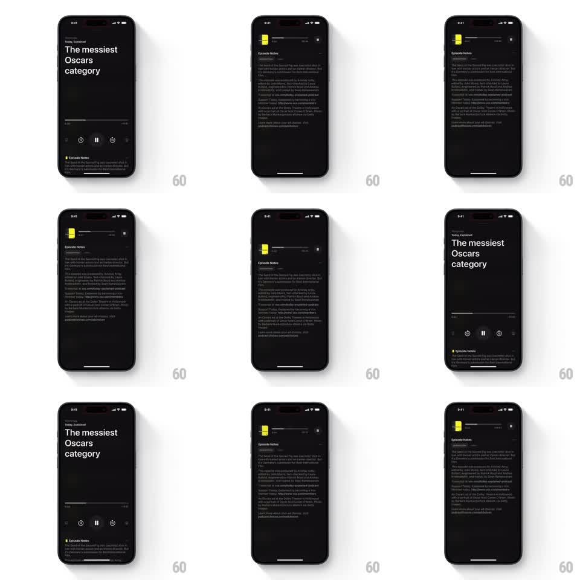

Media
Frame-by-frame

Rebuild this interaction 1:1: Neuecast's collapsing player - scrolling the episode notes snaps the full-screen player into a sticky mini-player pinned to the top (artwork thumb, title, live progress), and scrolling back re-expands it.

Rebuild this interaction 1:1: Neuecast's collapsing player - scrolling the episode notes snaps the full-screen player into a sticky mini-player pinned to the top (artwork thumb, title, live progress), and scrolling back re-expands it. ## Integration Integration: stack-agnostic spec - springs given as stiffness/damping, timed motions as duration + curve; map every value to your framework and animation library of choice. ## Scene Dark podcast player: "Today, Explained" over the episode title "The messiest Oscars category", a progress bar with times, transport controls (skip back, pause, skip forward), and "Episode Notes" filling the scroll area below. Scrolled state: a slim mini-player bar at the very top (yellow artwork thumb, episode title, thin progress line, skip controls) with notes scrolling beneath. ## Motion spec Pattern: scroll-driven player collapse with a snap. - Scrolling notes up: the hero region (show title, episode title, big progress bar, transports) collapses continuously with scroll - titles fade and slide up first (0-60pt of scroll), controls shrink and fade next (60-140pt). - Past the snap threshold (~140pt scroll or a downward flick): the player completes the collapse with a spring (spring ~320/22) into the mini-player bar: artwork thumb pops in at left (scale 0.6 -> 1, spring ~340/16), title slides in from the left (200ms), the thin progress line draws under them. - The mini-player's progress line advances in real time with playback. - Scrolling back to the top reverses: the mini-bar stretches, titles and controls fade/scale back in (same thresholds, spring ~320/22) - fully reversible, interruptible mid-motion. - The notes content scrolls under the mini-player; the bar has a blur background once content passes beneath it. ## Calibration - The snap is the soul: near the threshold, release decides expanded vs collapsed - no in-between resting state. - Pause state must be identical in both forms (icon swap synced). ## Reduced motion Collapse crossfades at the threshold (250ms); no continuous shrink. ## Don't miss - The yellow artwork thumb is the through-line: it exists in both states and anchors the morph. - Progress never jumps: the big bar and the mini line show identical playback position through the transition.